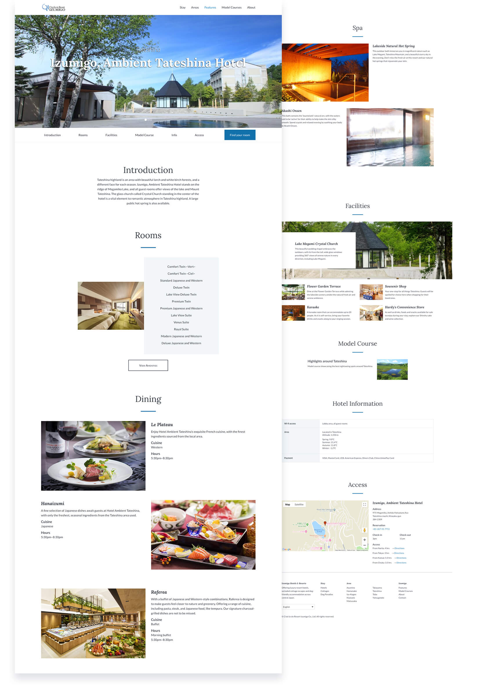
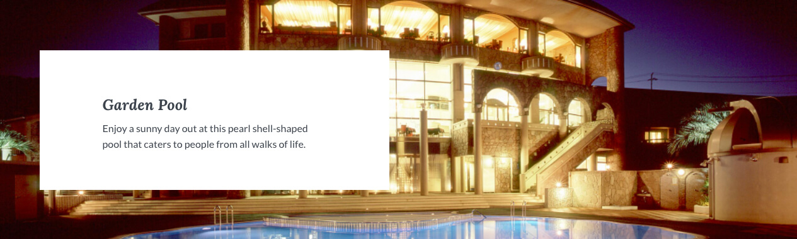
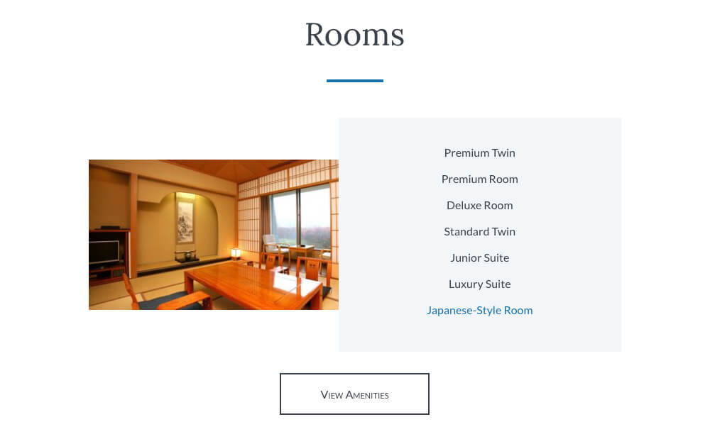
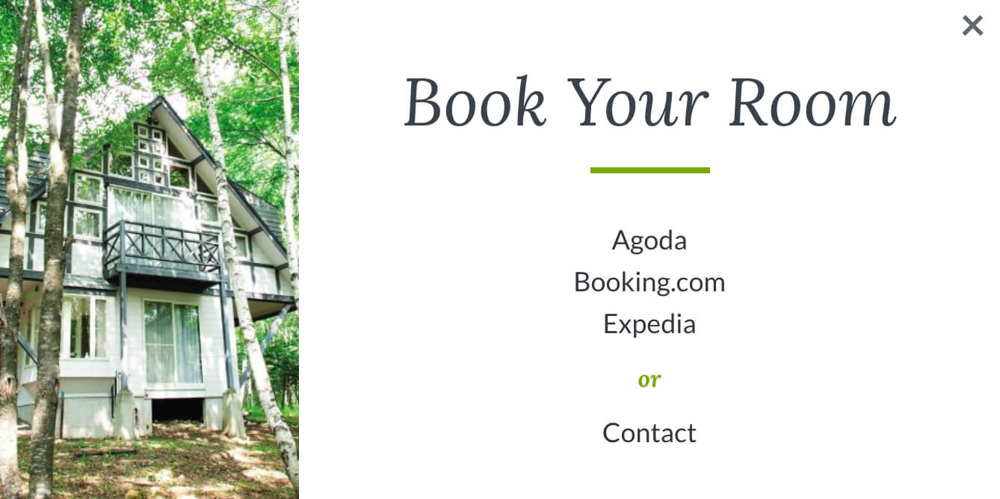
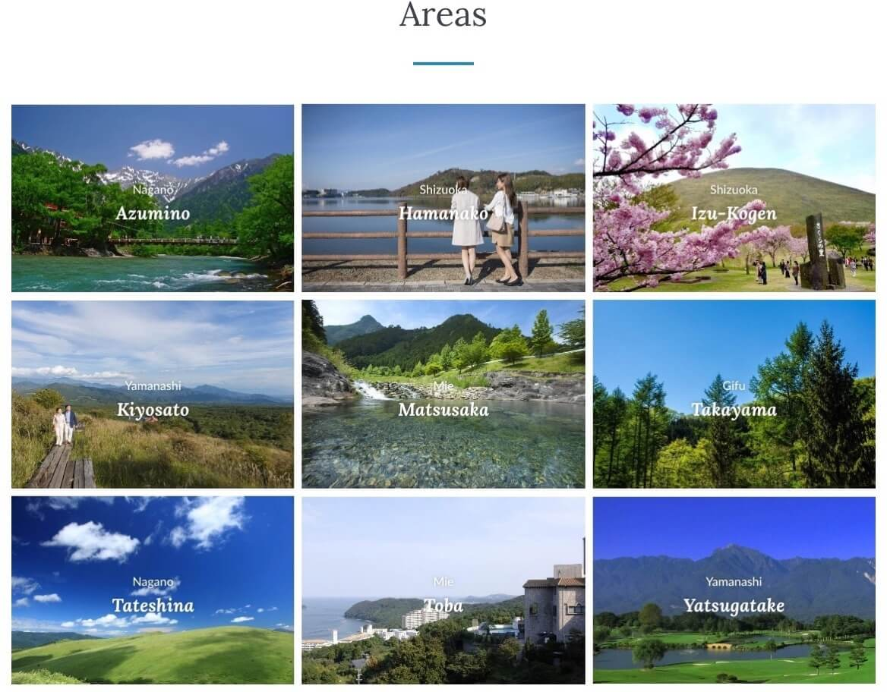
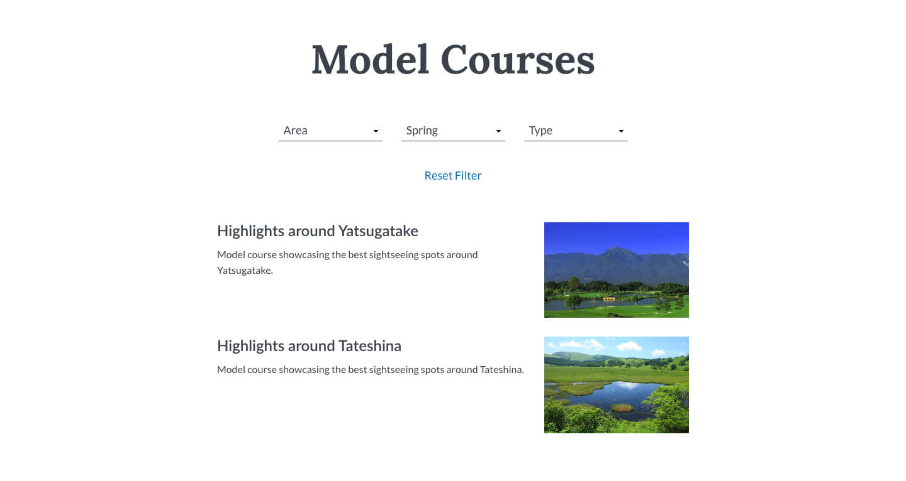
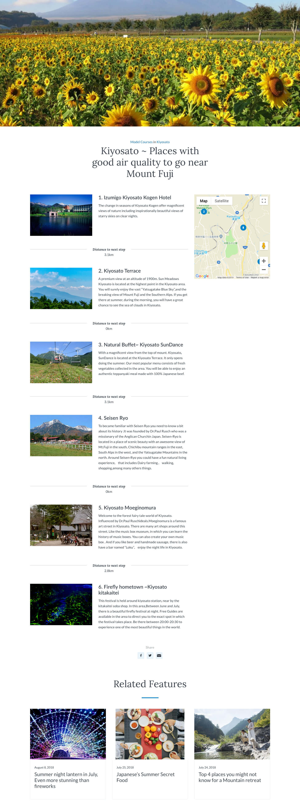

Izumigo Resorts is a resort hotel group in Japan offering luxury resort hotels, secluded cottage escapes and dog-friendly paradises across central Japan.
Team
- Software Engineer
- Creative Director
- Lead Designer (Me)
Role
- User research
- UI/UX design
- Front-end development
Impact
- Up to 400% increase in bookings per month
- Increase of global audience without additional marketing
- Increased trust and user satisfaction
The Challenge
Izumigo Resorts hotel group consists of 18 resorts spread over 9 prefectures where each resort has its unique website and facilities.
Most of these websites only have Japanese available. A consecutive problem is that at some of these resorts, staff can only speak Japanese leading to communication problems with travelers from overseas.
When wanting to attract a greater global audience, Izumigo Resorts came to JapanTravel for a full-scale resort group website on a budget. In essence, the challenge was simple, we had to provide a website that travelers could use before and during their stay at any of the resorts.
NDA disclosure: confidential information and visuals have been omitted.
Initial insights and further discovery
Izumigo's former website aimed at overseas travelers consisted of a single landing page missing various resorts, lacking general information and contained low-quality images.
I verified this evaluation by testing it quickly on a handful of users. The results concluded that users did not trust the website, and made it harder to determine whether they'd want to stay at Izumigo.

To figure out what type of information users needed to make a decision on staying at Izumigo I interviewed users in conjunction with doing online research of reviews and questions on booking and review websites.

Synthesizing the data
Using both qualitative and quantitative data I was able to identify a few common themes:
Escaping the City
Travelers staying at Izumigo generally want to escape the city and stay in a quiet remote area. However, remote areas come with the challenge of accessibility and a fear factor of not knowing what to expect in the vicinity.
Harvesting Information
Travelers generally come to a hotel group website for more information and deals not provided on hotel comparison sites. They look for room amenities and hotel facilities combined with pictures to reassure their individual needs are being met.
Pet Paradises, not for everyone
Pet friendly hotels are great, although not for everyone. Reviews showed that travelers without pets would most likely not want to stay at these type of hotels. On the other hand, pet owners want to make sure they can stay with their companion and want to know about things to do for animals.
Defining the new Izumigo
I combined the research insights with a competitor research, a swot analysis, and a feature analysis enabling me to brainstorm ideas for Izumigo's new platform.
Izumigo's strength consists of having 3 accommodation types aimed at different traveler types, each having a unique personality and facilities.
Calming Blue
Relaxation at a ryokan
Natural Green
Become one with nature
Vibrant Yellow
In paradise with your pet
Creating a clear distinction helped travelers find the right type of accommodation based on their needs. Also, this distinction prevented travelers without pets having an unintended stay at a dog paradise.
Creating a coherent experience
As the new website represented the full extend of Izumigo Resorts it needed to have a coherent and consistent experience amongst all variations.
I designed the accommodation pages for all types of stays with a similar flow consisting of an introduction, available rooms and amenities, facilities, model courses, accommodation information, access and the option to book a stay. This enabled travelers to compare the differences between the multiple accommodation types.

Highlighting Facilities
As each accommodation had unique facilities I created a facility overview, highlighting the main feature to bring out a resorts unique personality.

Viewing Rooms
One of the challenges was to keep the website low in pages due to budget restrictions yet to provide users with all essential information necessary at the same time.
Through prior research, I determined that room pictures were vital for users to decide if they'd stay at the accommodation, so I created an overview of the rooms available.

When clicking on a room, rather than going to a new page, we'd show a modal containing a short description and an image carousel so that users could view multiple images of each room.

Using this method we could still show all essential room information while keeping the number of pages low or making one page extremely long, as some hotels would have up to 10 different room types.
Booking a stay
Each accommodation had a different management system where booking options varied from using Agoda, Booking.com, Expedia or direct contact. I designed a booking button which opens up a modal view displaying the available options so that users could choose their preferred method of booking. Showing prices up front would've been ideal, however, this was not possible within our time constraints.

Discover Izumigo
Most users would come to this website through reviews or booking websites. To help users discover other accommodations I created the option to discover by accommodation type or area.

Iterating the discovery
At first, I created an area grid to highlight the beauty of each area. Usability testing revealed that although users thought the areas looked nice, they'd have no clue where it is located.
To solve this problem we created a discover by map feature which enabled users to understand where the resorts were located and gauge the distance between them rather than having to guess.

Because Japan is a long island and Izumigo Resorts is only located in rural central Japan, users didn't need a full map of Japan. Through user testing we figured out that as long as Tokyo and Osaka were on the map, users would relatively be able to determine the location of the resorts.
Discovering things to do
Usually, travelers would already know what they wanted to do around the area before booking a hotel, however, we crafted model itineraries to provide travelers spending their time at one of the resorts with some extra inspiration on what they could do in a day.
On the Model Course landing page I created a filter by area, season and type so that users could find model courses suited to what they were looking for. e.g. "Shizuoka", "Summer", "Couples".

The model course page contains a sticky map on the right side of the page while a user is scrolling down so that a user can directly see where the approximate locations are.
Creating this feature helped users discover more things to do even in the most remote areas. However, I must note that the feature could be improved by providing links to the appropriate destinations and directions between the destinations.

Collaborating with the client
During this project we collaborated with the client by regularly keeping them up to date throughout the process. The site went through a continuous iteration wherein we would demonstrate wireframes, high fidelity mockups and Invision prototypes to convey concepts and progress.
To further attract overseas customers we advised Izumigo Resorts to provide exclusive offers and put legitimate customer reviews on the website to gain more attraction as it was outside of the scope of the current project.

The results
The final results of this project have been tremendous and even went beyond client expectations. After launching the new website, the average amount of bookings per month increased up to 400% of global audiences without additional marketing.